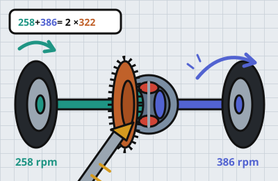

giro!

Diferencial Aberto
O diferencial de um eixo traseiro em 3D, em câmera lenta, com uma apresentação que monta o conjunto peça por peça: da carroça ao eixo rígido, dos satélites ao blocante, cada peça resolvendo o problema da anterior.